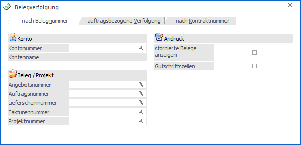
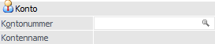
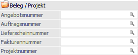
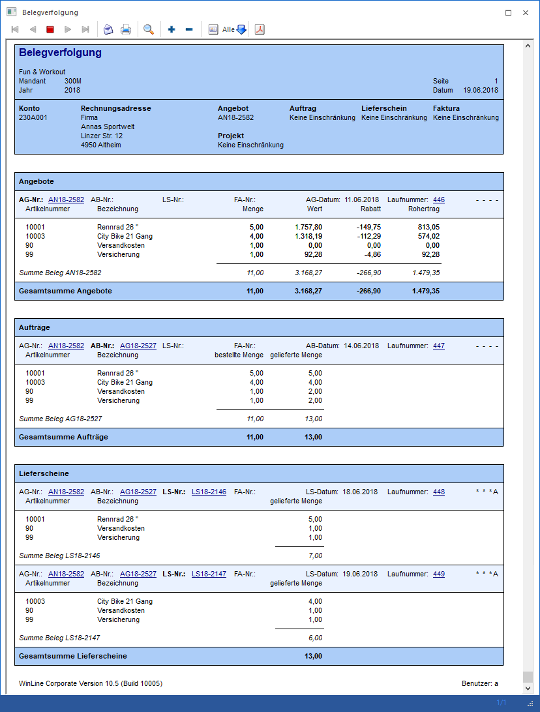
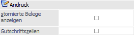

In dem Register "nach Belegnummer" werden durch die Eingabe einer Beleg- bzw. Projektnummer alle Belege (z.B. inklusive deren Restmengen) angezeigt, welche zu dieser Nummer erfasst wurden.

Es stehen folgende Selektionskriterien und Einstellungen zur Verfügung, wobei die Hinterlegungen in dem Bereich "Andruck" benutzerspezifisch gespeichert werden:
Konto

Ø Kontonummer
Im Feld "Kontonummer" wird jener Kunde / Lieferant hinterlegt, für welchen Belege kontrolliert werden sollen.
Ø Kontoname
Hier wird der Name des zuvor ausgewählten Kontos angezeigt.
Belege / Projekt

Ø Belegnummer / Projektnummer
Über die Belegnummern bzw. Projektnummer kann auf die entsprechenden Belege selektiert werden. Hierzu steht auch der Belege - Matchcode (bzw. Projektmachtcode - Belegansicht) für die jeweilige Stufe zur Verfügung. D.h. wird der Matchcode für die Angebotsnummer aufgerufen, werden alle Angebotsbelege (die bereits gedruckt wurden) angezeigt; wird der Matchcode im Eingabefeld "Lieferschein" angezeigt, dann werden alle Lieferscheine angezeigt, welche bereits gedruckt wurden.
ü Selektion nach Belegnummer
In
der Auswertung wird der Ausgangsbeleg und daraus resultierenden Folgebelege
ausgeben.
Beispiel
Es wurde auf die Angebotsnummer "AN18-2582" selektiert. Für dieses Angebot wurden bereits ein Auftrag und zwei Teillieferscheine erfasst.

Hinweis
Erfolgt eine Ausgabe z.B. aufgrund einer Auftragsnummer und diese mündet in einen Sammelbeleg (Sammellieferschein oder Sammelfaktura), dann werden alle Positionen des Sammelbelegs, welche nicht aus dem selektierten Auftrag stammen, mit einem "*" gekennzeichnet.
ü Selektion nach Projektnummer
Es
werden alle Belege, welche mit dieser Projektnummer erfasst wurden, in der
Auswertung ausgegeben. Die Sortierung erfolgt hierbei nach der Belegstufe, d.h.
es werden zunächst alle Angebot / Anfragen, gefolgt von den Aufträgen /
Bestellungen, usw. in der Belegverfolgung angezeigt.
Andruck

Ø stornierte Belege anzeigen
Wird die Option "stornierte Belege anzeigen" aktiviert, so werden auch Belege angezeigt, welche bereits storniert wurden.
Beispiel
Die Belege "Angebot", "Auftrag", "Lieferschein" und "Faktura" wurden mit einer gleichlautenden Projektnummer erfasst. Anschließend wurde die Faktura wieder storniert.
Die Ausgabe der Belegverfolgung mit der Einschränkung auf die Projektnummer und aktivierter Checkbox zeigt auch den stornierten Beleg an.
Ø Gutschriftszeilen
Durch Aktivieren der Option "Gutschriftszeilen" werden auch Belegzeilen mit ausgegeben, welche mit dem Zeilentyp "6-Gutschrift" erfasst wurden.